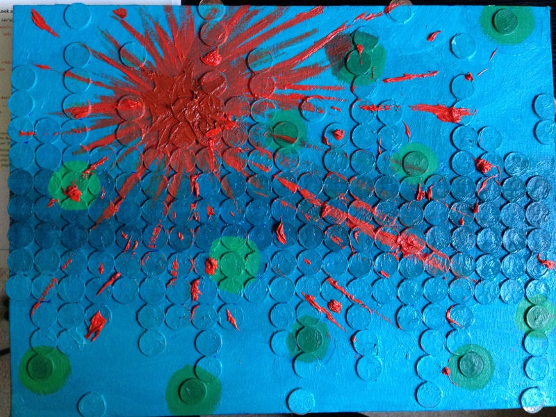
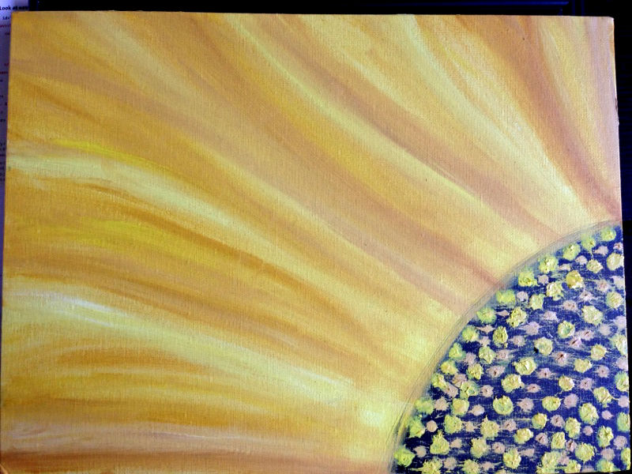
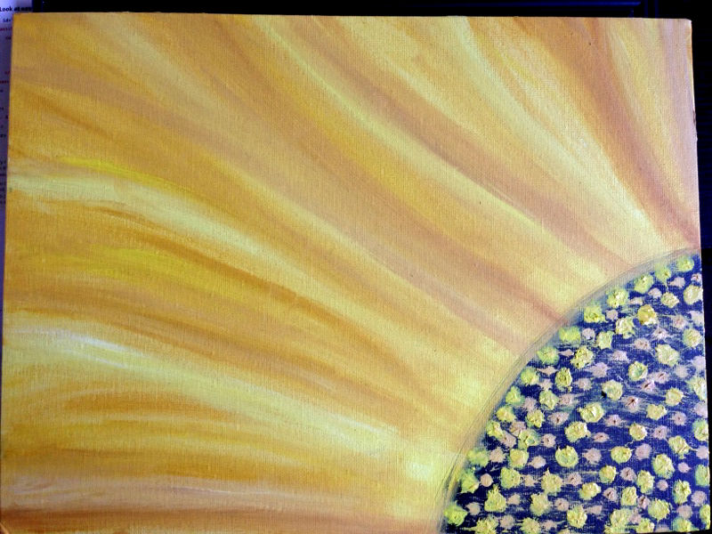
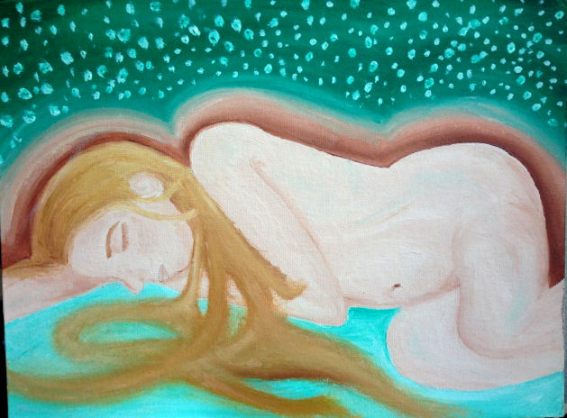
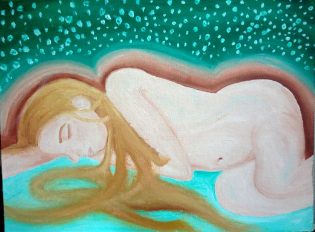

A Healthy You

A Healthy Soul
Sisterhood/ Brotherhood
- Finding friends in similar interest
- People to bounce your ideas off of
- Recognizing the vast amount of resources in each other and our variety of experiences. You don’t need to experience every mistake as your own when you have a great support group of people who have lived through them. The learning process can be joined with our peers.
- We are designed to be social beings. In tribes, each member has a responsibility and without that member the tribe cannot survive. Hunters, gatherers, caregivers, protectors and so on. Each of us has a resource to give in our friendship and by surrounding ourselves with a good group of people, we will feel well-rounded and supported.
Hobbies
- Reading, Painting, Cooking...ect.
- By finding something that activates a different concentration is a mini workout for your mind while stimulating it’s creativity as well. It is a way for you to increase your happiness and have a physical manifestation of your talents. We have a desire to be moving forward and excelling, finding a hobby can bring joy in the process.
- When we were younger we doing things to make us happy because there were less responsibilities and more time, now we must actively search for things to bring us joy. We may confuse this with temporary happiness like overindulging in unhealthy activities like eating, drinking, watching TV.
- A hobby brings a more fulfilling happiness because it is inducing a creativity that we do not engage in day to day activities. It is a bit of a hassle to seek out a hobby and carve out time for seemingly unimportant activities, but by finding things that you can make your own, you will find more time. The activities that used to bring you joy will be uncovered as distractions and a clear mind will reveal more time.
My Hobby: Paintings 2011-2013


 

 
